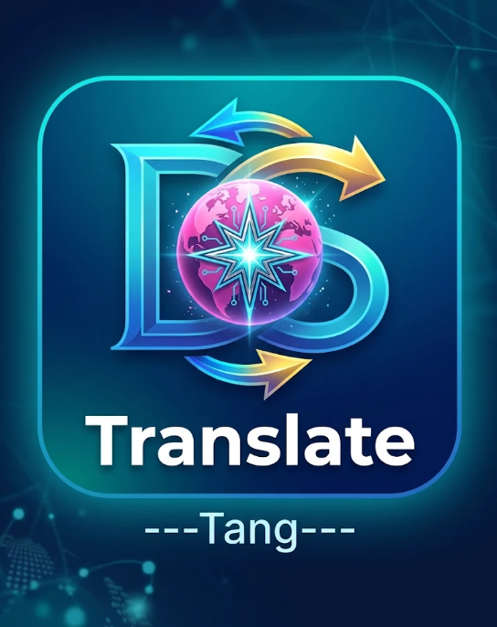

DS Translation
双向实时翻译（中缅老泰 ⇄ 欧洲全语种 · 实时响应版）
🇨🇳 🇲🇲 🇱🇦 🇹🇭 输入主要语言文本：
✕ 清空
⚡ 已开启实时翻译（提示：悬停结果可看原文本）
源语言：
自动检测语言 (Auto Detect)
中文 (Chinese)
缅甸语 (Burmese)
老挝语 (Lao)
泰语 (Thai)
目标翻译语言（英语 + 欧洲全语种）：
英语 (English)
法语 (French)
德语 (German)
西班牙语 (Spanish)
意大利语 (Italian)
俄语 (Russian)
葡萄牙语 (Portuguese)
土耳其语 (Turkish)
乌克兰语 (Ukrainian)
波兰语 (Polish)
荷兰语 (Dutch)
希腊语 (Greek)
捷克语 (Czech)
瑞典语 (Swedish)
匈牙利语 (Hungarian)
罗马尼亚语 (Romanian)
芬兰语 (Finnish)
丹麦语 (Danish)
挪威语 (Norwegian)
保加利亚语 (Bulgarian)
克罗地亚语 (Croatian)
斯洛伐克语 (Slovak)
斯洛文尼亚语 (Slovenian)
爱沙尼亚语 (Estonian)
拉脱维亚语 (Latvian)
立陶宛语 (Lithuanian)
塞尔维亚语 (Serbian)
阿尔巴尼亚语 (Albanian)
马其顿语 (Macedonian)
波斯尼亚语 (Bosnian)
冰岛语 (Icelandic)
爱尔兰语 (Irish)
马耳他语 (Maltese)
威尔士语 (Welsh)
欧洲语种翻译结果（完美对齐）：
一键复制
等待输入...
暂无原文
🌐 输入或粘贴外文/自动检测：
✕ 清空
⚡ 已开启实时翻译（提示：悬停结果可看原文本）
源语言：
自动检测语言 (Auto Detect)
英语 (English)
法语 (French)
德语 (German)
西班牙语 (Spanish)
俄语 (Russian)
土耳其语 (Turkish)
目标翻译语言（转主要亚洲语言）：
中文 (Chinese)
缅甸语 (Burmese)
老挝语 (Lao)
泰语 (Thai)
亚洲主要语言翻译结果（完美对齐）：
一键复制
等待输入...
暂无原文